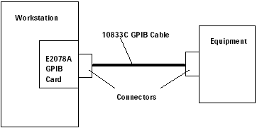
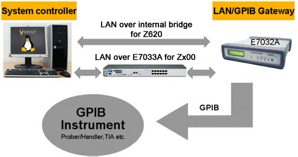

Communication with a GPIB interface
There are two methods to communicate with a GPIB interface.
- Using the E2078A GPIB card in your workstation
GPIB communication is message-based. The workstation and equipment are connected by a standard GPIB cable and communicate with each other by sending messages with the desired information.
The figure below illustrates how the workstation is connected to the equipment with a GPIB interface using the E2078A which is an HP-UX product and hence is becoming obsolete.

- Using the LAN to GPIB Gateway
The following figure shows the solution with the Agilent gateway for this setup.

The E7032A (E5810A) LAN to GPIB gateway is the Advantest solution to set up GPIB communication between the Advantest Linux controller installed in a V93000 system and other external GPIB instruments such as the Prober/Handler.
As shown above, the connection between the E7032A (E5810A) LAN to GPIB gateway and the second PCI LAN card (eth1) in the controller must be connected through a LAN functionality as provided by the switch E7033B. You may use the switch for up to four LAN to GPIB gateways at the same time.
More information on this can be found in the System Controller and Software Installation Guide in the section Configuring a LAN to GPIB gateway.
Functional changes
- Introduced before SmarTest 6.3.2
- SmarTest 7.1.2: PoE LAN switch E7033B for gateway E7032A (E5810A) introduced